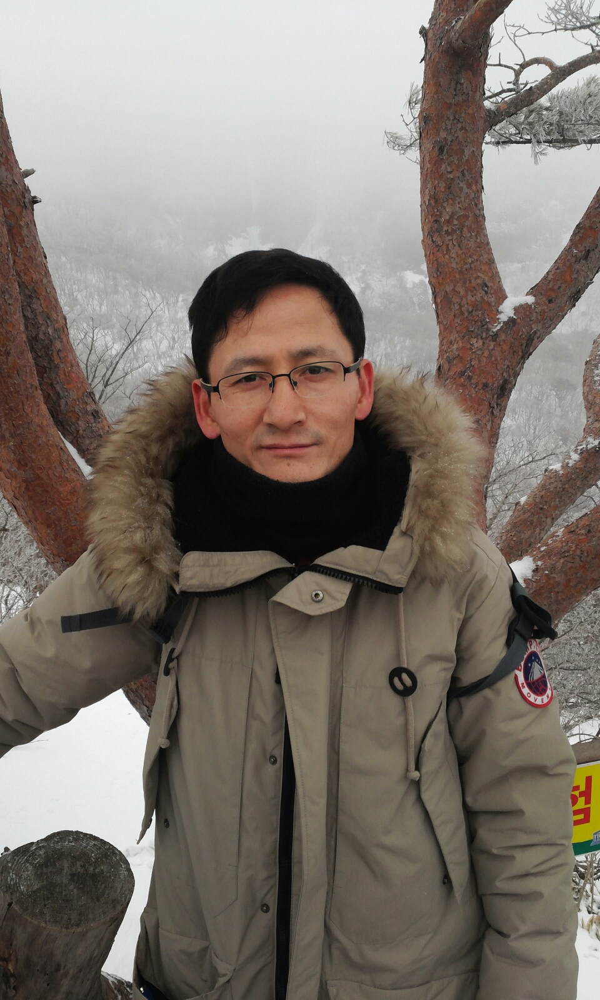

아빠의 어릴때는 사실 잘 모르겠다. 농사도 지었을 것 같고 공부도 열심히 하셨다고 한다. 학교는 국민학교, 중학교, 고등학교를 다니셨다고 한다. 그리고 대학교는 부산대학교 법학과를 졸업하셨다. 지금은 sc제일은행에서 은행원으로 일하시고 있다.
이 사진은 제주도에 여행갔을 때 한라산에서 찍은 사진이다. 등산은 힘들었지만 설경이 정말 아름다웠던 기억이 난다. 기회가 된다면 또 가고싶을 정도로 설경이 좋았다. 눈 오는건 별로지만 설경은 너무 좋다.